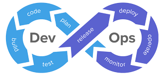

About.
Me.
Gaurav Nale, an engineer with a degree in computer science. My undergraduate studies at Mumbai University in India were completed in 2018, and I'm now pursuing an MS in Computer Science at the University of Texas at Arlington, United States.
I've worked as a full-stack developer for the past three years, handling multiple websites, running a large database, and diagnosing issues. These days I am working as Research Assistant at Heracleia Human Centered Computing Lab in University of Texas at Arlington.
Outside of my work commitments, you'll find me dreaming about Formula 1 Racing, playing chess, cooking and writing poems.
Education.
MS in Computer Science, 2023
University of Texas at Arlington, Texas
Specialization in Database Systems and Intelligent Systems
GPA - 3.7/4
Bachelor in Computer Engineering, 2018
Vidyalankar Institute of Technology
University of Mumbai, India
GPA - 3.5/4
Skills.
The skills, tools and technologies I use to bring your products to life:
| Programming Language | Python |
PHP |
Java |
 C |
 C++ |
 C# |
|
| Database Systems |  MySQL |
 MangoDB |
 Oracle DB |
SQLlite3 |
|||
| Web Technologies and Framework | ASP.Net |
Angular |
HTML |
CSS |
WordPress |
Laravel |
|
| Operating Systems | Windows |
Linux |
MacOS |
||||
| Tools and other Technologies |  DevOps |
 Azure |
BitBucket |
Git |
Firebase |
 Postman |
Agile |
Work.
Experience.
Graduate Research Assistant
CSE Dept, The University of Texas at Arlington (Apr 2022 - Present)
- Working in computer vision projects that involve human activity recognition, video analysis, etc., to automate systems that assess people with different physical and cognitive abilities.
- Developing an AR application to integrate SLAM based maps to android application using C#, Unity and Augmented Reality.
- Maintaining Heracleia Human Centered Computing website.
PETRA International Conference Coordinator
The University of Texas at Arlington (Apr 2022 - Present)
- Organizing an International Conference, PErvasive Technologies Related to Assistive Environments (PETRA) 2022-23, held in Corfu Island, Greece.
- Monitoring author's queries, paper review and proceedings of the conference.
- Maintaining PETRA Conference website.
Systems Engineer
Tata Consultancy Services, India (Nov 2018 - Jun 2021)
- Worked as a full-stack developer to handle many websites and give essential modification and updates.
- Created automationscripts in ASP.NET and SQL queries for effective website testing, including managing a complete database and troubleshooting problems for any application.
- Worked on ASP .NET, MVC, MySQL, Azure, AngularJS, and HTML for these applications.
Projects.
Training Panda Robotic Arm for Object Movement
Technologies: Robotic OS, Python, Augmented Reality, C#, Unity
- Training Panda Robotic Arm to detect objects placed in an environment and move them from one position to another.
- Currently,we are developing an application to integrate SLAM based maps to android application to visulaize environment and localize the robot.
Understanding cognitive fatigue in human using ROS
Technologies: Robotic OS, Python, Tkinter, CNN
- Developed a web application to collect data from EEG and ECG sensors attached to humans using Robot Operating System and Python.
- We used gait cycle analysis, a biometric method related to human locomotion to identify cognitive fatigue in individuals.
Comparing accuracy of various Machine Learning techniques
Technologies: Python, KNN, Naive Bayes, Linear Regression, Weighted Linear Regression, Logisctic Regression, Decision Tree
- Applied machine learning techniques to a dataset for gender classification, and assessed each technique's accuracy against a test dataset.
- We trained the model for several feature combinations against computed accuracy, and we also performed cross-validation approach using the Leave One Out Cross-Validation method.
Student Serv’ Management System
Technologies: HTML, CSS, Node JS, Laravel
- Using PHP/Laravel, a role-based access control system website with three privileged roles (Student, Staff, and Admin) was developed.
- It was created with the ability for students to make purchases, form and join clubs to socialize with other students, and publish original content online that was made available by the staff.
Virtual Stock Market Simulator
Technologies: HTML, CSS, Natural Language Processing, Data Mining, Machine Learning
- Created a virtual stock market environment to mimic the functioning of a real cattle market and aid users in understanding investing fundamentals and how the stock market operates as a whole.
- Using natural language processing, the system's stock values will fluctuate based on the daily news (NLP). built an intuitive website that makes it simple to comprehend and learn about stocks.
Publications.
Assessment of Cognitive Fatigue from Gait Cycle Analysis
Hamza Reza Pavel, Enamul Karim, Ashish Jaiswal, Sneh Acharya, Gaurav Nale, Michail Theofanidis and Fillia Makedon
Technologies 2023
PDF DOI
Analysis of Factors Influencing Stock Market Simulator
Shashikant Dhuppe, Gaurav Nale, Rajat Pawar and Rugved Deolekar
2018 5th International Conference on “Computing for Sustainable Global Development”
PDF
Contact.
Me.
Dropping a line to say g’day, ask for my resume or
see if we can build something amazing together?
I’d love to hear from you!
| | gauravnale28@gmail.com |
| Gaurav Nale | |
| gauravnale | |
| | Engineering Research Building (ERB) Room 305, University of Texas at Arlington, Texas, 76019, USA |
Get in Touch!!
COPYRIGHT GAURAV NALE. ALL RIGHTS RESERVED